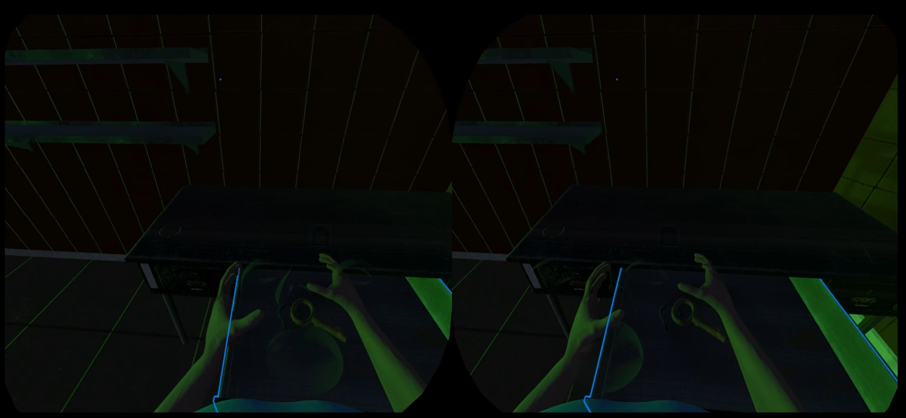

Course Project · Theories and Lab of VR/AR (Spring 2024)
Role · UI/UX, Visual Effects, Camera Presentation, Cutscenes
Tech · Unity, C#, XR Interaction Toolkit, Meta Quest 2, GitHub
Links · GitHub (Private) · Presentation / Demo
Project Overview
Abandoned Hospital Escape is a VR escape horror game built for Meta Quest 2 in Unity. Set in an abandoned hospital, the game was designed as a short first-person horror experience centered on tension, immersion, and escape-oriented progression.
Developed as a university course project, it targeted around 10 minutes of gameplay and placed 1st in the final on-site student vote at the course showcase. I mainly contributed to presentation-related parts of the experience, including UI, visual effects, camera transitions, and cutscene flow.
What I Did
- Implemented immersive visual effects, sound-linked presentation elements, and UI/UX components.
- Worked on camera transitions and post-processing-based scene presentation.
- Built the opening and ending cutscenes, along with game-over and clear screens.
- Collaborated in a team workflow using GitHub.
Design Challenge
The main challenge was making presentation elements feel correct inside the headset, not just in the Unity editor. UI placement, scale, and scene transitions that looked acceptable in the local Game View often felt different in actual VR.
I adjusted canvas setup, transforms, and presentation flow with repeated in-device testing so that the interface and cinematic moments worked more reliably in headset. This project made me more aware that VR presentation needs to be validated from the player’s in-device perspective, not treated like a standard screen-based scene.
Gameplay Preview

Gameplay scene from the VR horror environment, showing the project’s dark atmosphere and presentation-focused experience design.